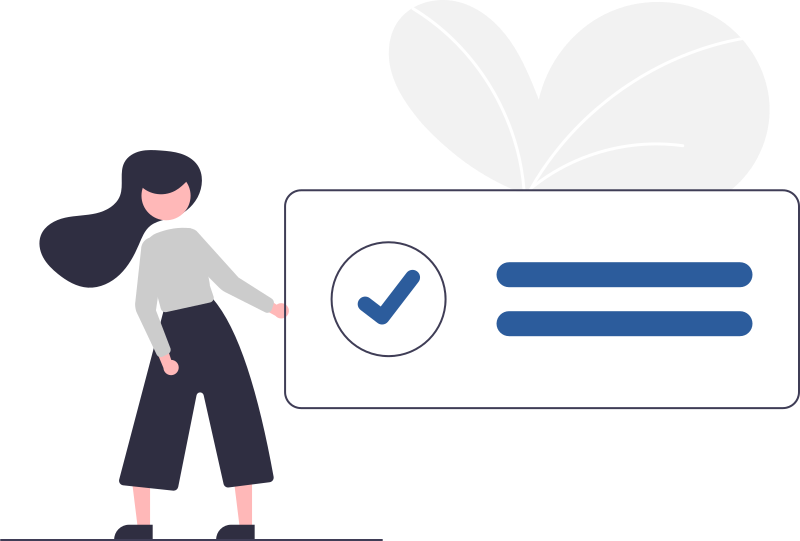
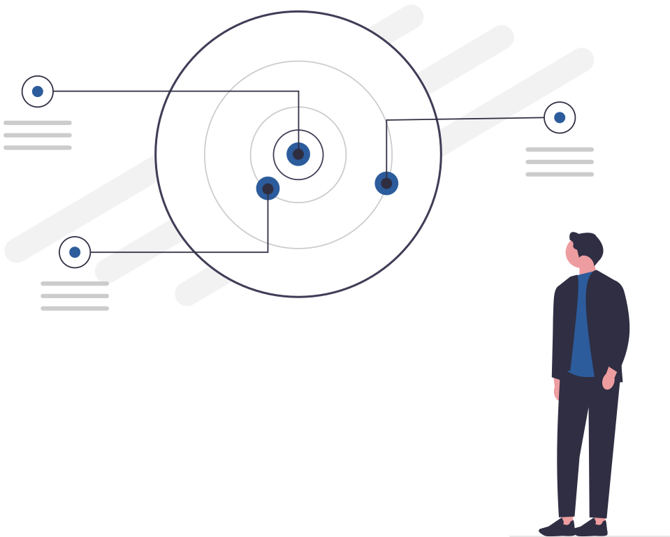
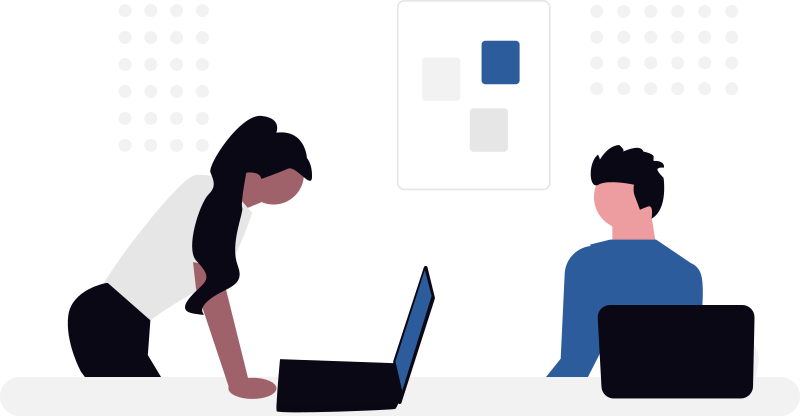
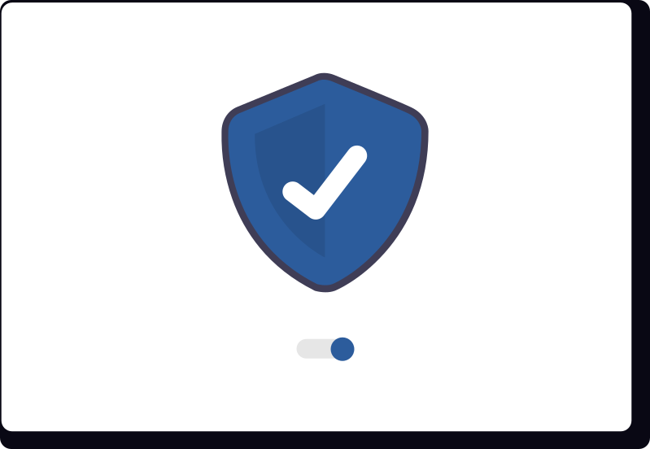

Contents
目次
01なぜ「導入したのに使われない」が起きるのか
02このチェックシートの使い方
0350のチェックリスト（5カテゴリ）
04スコア判定 — 自社はどのフェーズか
05フェーズ別・次の一手
© 株式会社AI棒
AI導入のよくあるつまずき
ツール導入だけでは、組織のAI活用は定着しません
多くの企業の研修に伴走する中で見えてきた、典型的なつまずきは次の3つ。いずれも「ツール選び」ではなく「組織の準備」の問題です。
使われずに終わる
アカウントは配ったが、日々の業務で開かれない。一部の得意な社員だけが使い、組織の生産性は変わらない。
→ カテゴリ 1・4 でチェックルールが追いつかない
禁止のまま放置され裏で使われる。あるいはルールが厳しすぎて、誰も使えない。どちらもリスクは減らない。
→ カテゴリ 3 でチェック効果を説明できない
「なんとなく便利」で止まり、投資対効果を経営層に示せない。次の予算がつかず、取り組みが尻すぼみに。
→ カテゴリ 2・5 でチェック© 株式会社AI棒
このチェックシートの使い方
50項目に◯をつけるだけ。約10分で現在地がわかります
まず、50項目に“◯”をつけてチェックする
次ページからの50項目を読み、当てはまるものに◯。迷ったら「できていない」と数えてください。
◯の合計でスコアを数える（最大50点）
カテゴリごとの◯の数もメモしておくと弱点がわかります。
巻末の判定表でフェーズを確認し、「次の一手」を決める
フェーズごとの「次の一手」から着手順を決めてください。
© 株式会社AI棒

チェックリスト 1/5
目的設定
「全社でAI活用」という掛け声だけでは動きません。どの業務を、どれだけ良くするのかが出発点です。
A対象業務の特定
AI活用の目的を「業務名」で言える（例：議事録作成の時間削減）
対象業務の現状の作業時間・件数を把握している
「AIでやらないこと」も決めている
最初に成果を出す部署・チームを決めている
経営層と現場で、目的の認識が一致している
B効果指標（KPI）の設計
削減時間・件数など、数値で測れる指標を決めている
導入前の数値（ベースライン）を記録している
効果を判定する期限を決めている（例：3か月後）
「使われているか」（利用率）の指標も見ている
成果の報告先と報告頻度を決めている
© 株式会社AI棒

チェックリスト 2/5
推進体制
AI活用は「担当者の熱意」だけでは続きません。役割・時間・経営の関与が確保されているかを確認します。
A推進者と役割分担
社内に推進担当者（旗振り役）がいる
推進担当者の活動時間が業務として確保されている
経営層のスポンサー（意思決定者）が明確である
部署ごとの推進メンバーを決めている
社員が質問・相談できる窓口が決まっている
B現場の巻き込みと経営の関与
現場の意見・困りごとを聞く場を設けている
経営層自身が日常的にAIを使っている
社内の成功事例を共有する仕組みがある
抵抗感のある社員へのフォロー方針がある
推進が特定個人の頑張り頼みになっていない
© 株式会社AI棒

チェックリスト 3/5
ルール・環境
「禁止したまま」も「野放し」もリスクです。安心して使える線引きと、使うための環境を確認します。
A利用ガイドライン・セキュリティ
生成AIの利用ガイドラインを定めている
入力してよい情報・いけない情報を区分している
ガイドラインを全社員に周知している
情報漏えい等が起きた場合の対応フローがある
ガイドラインの見直しサイクルを決めている
Bツール選定・アカウント運用
業務内容に合わせてツールを選定している
有料プラン・法人契約の方針が決まっている
アカウントの発行・削除ルールがある
利用できる社員の範囲を決めている
無許可利用（シャドーAI）の実態を把握している
© 株式会社AI棒
チェックリスト 4/5
スキル・教育
一斉研修を1回やって終わり、では個人差が開くだけです。現状把握と、続く学びの仕組みを確認します。
A現状の把握
社員のAI利用状況を調査したことがある
リテラシーの個人差を把握している
部署ごとの活用ニーズを把握している
「使えない・使わない理由」をヒアリングしている
目指すスキルレベルを定義している
B研修設計・継続学習
職種・レベル別に研修を設計している
座学だけでなく、実務を題材に演習している
研修後のフォローアップの場がある
いつでも質問できる場（チャット・相談会）がある
新入・中途社員向けの学習導線がある
© 株式会社AI棒
チェックリスト 5/5
定着・効果測定
導入後に「誰も見ていない」状態が、尻すぼみの最大の原因です。成果が積み上がる仕組みを確認します。
A利用状況の可視化
ツールの利用率を定期的に確認している
部署別・用途別の利用状況を分析している
使われていない部署の原因を調べている
活用事例を集める仕組みがある
削減効果を時間・金額で算出している
B改善サイクル・横展開
効果測定の結果を経営層に報告している
うまくいった業務を他部署へ展開している
プロンプトやテンプレートを社内共有している
ツール・ルールを定期的に見直している
次の活用テーマ（自動化等）を計画している
© 株式会社AI棒
スコア判定
◯の数で、自社の現在フェーズを判定します
0-19点
まず「土台づくり」から
目的・体制・ルールの土台が未整備の状態。ツールや研修より先に、カテゴリ1〜3の項目を埋めることが先決です。
20-39点
「一部の人だけ」を抜け出す
動き始めているが、定着はこれから。◯が少なかったカテゴリが伸びしろです。教育と可視化（カテゴリ4・5）に投資する段階です。
40-50点
高度化・自動化へ
全社活用の仕組みができています。次は業務フローの自動化や、部門特化の高度な活用へステップアップする段階です。
© 株式会社AI棒
フェーズ別・次の一手
フェーズに合わせて、着手する順番を決めましょう
チェック結果をもとに、無料個別相談で「次の一手」をご提案します
記入済みのチェックシートをお持ちいただければ、フェーズに合わせた研修設計・助成金活用までその場でご案内します。（60分・Zoom）
© 株式会社AI棒
ご留意事項
ご利用にあたって
本チェックシートは、バイテック法人AI研修が多数の企業への研修提供を通じて整理した観点をもとに作成しています。すべての企業に同一の優先順位が当てはまるものではありません。
スコアは自己評価にもとづく目安であり、AI活用の成熟度を保証・認定するものではありません。
社内でのコピー・配布はご自由にどうぞ。社外への転載・再配布はご遠慮ください。
AI研修・助成金活用のご相談は、無料個別相談（biz.bytech.jp/counseling）で承ります。
発行：バイテック法人AI研修（株式会社AI棒） 2026年9月版
© 株式会社AI棒